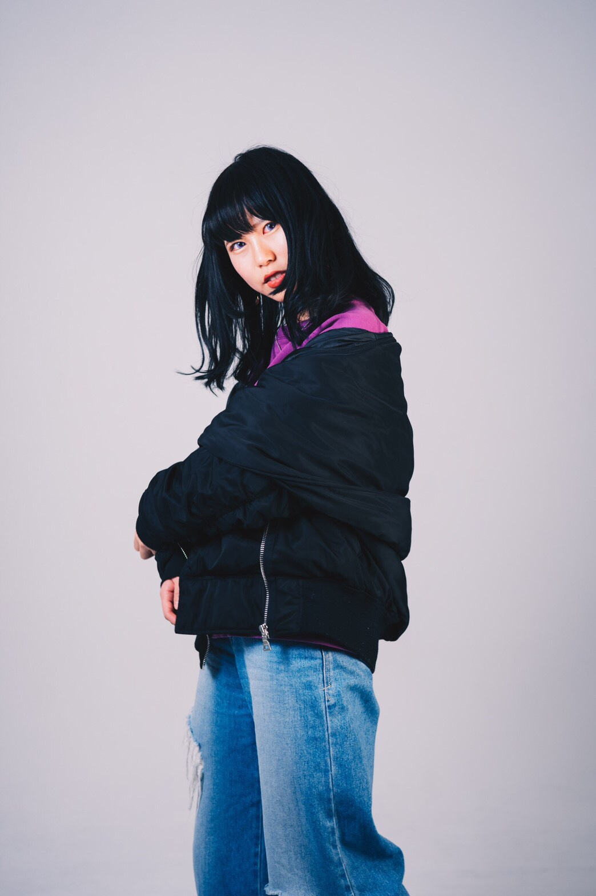
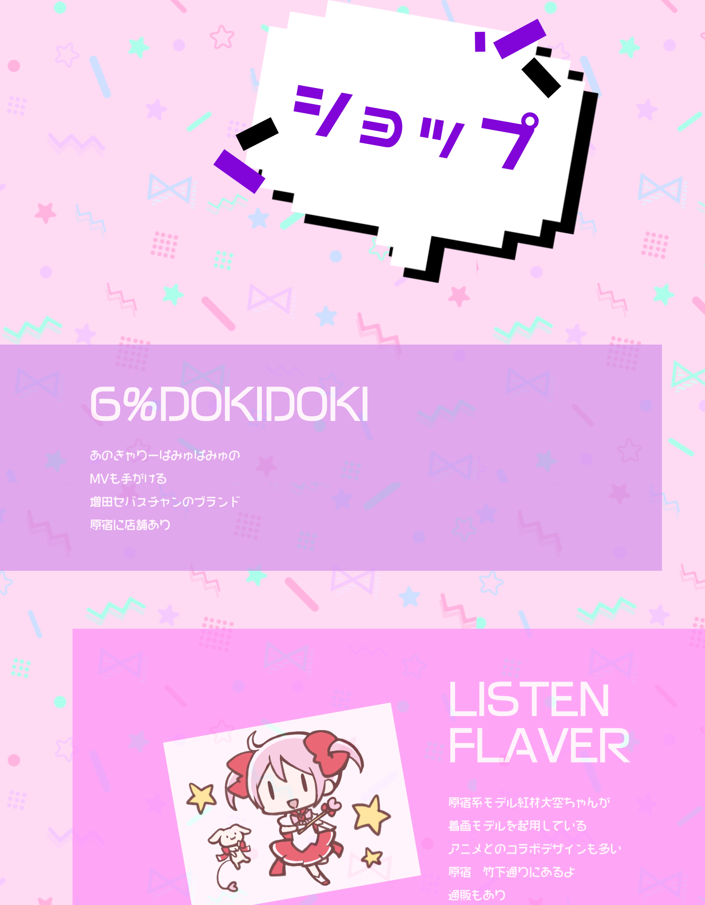
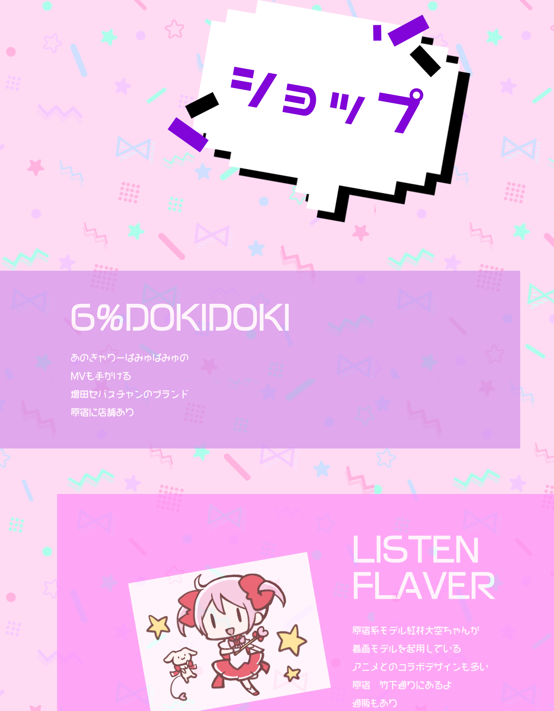
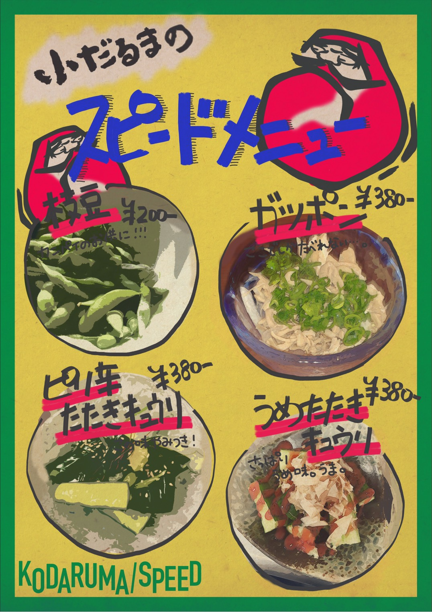
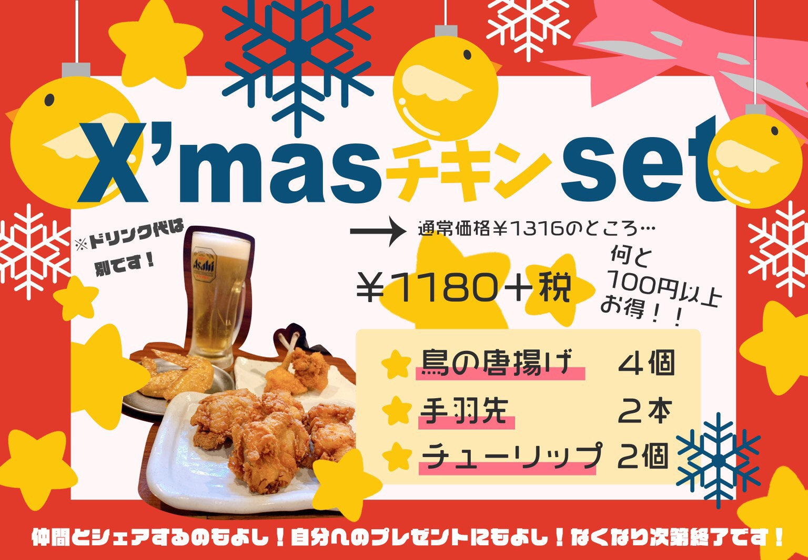
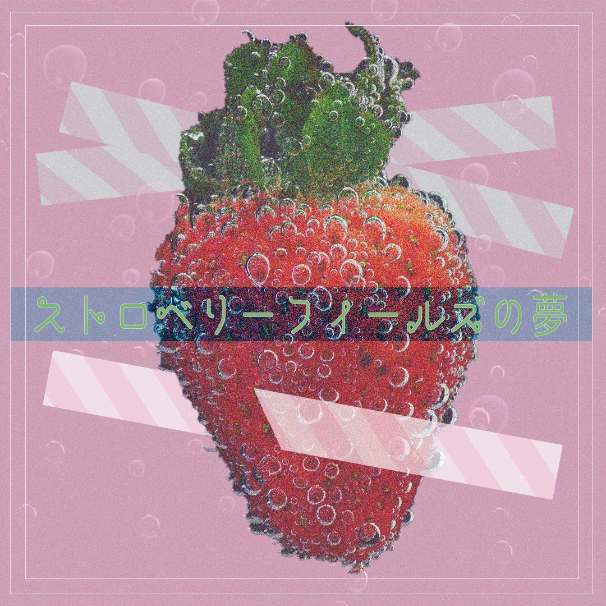
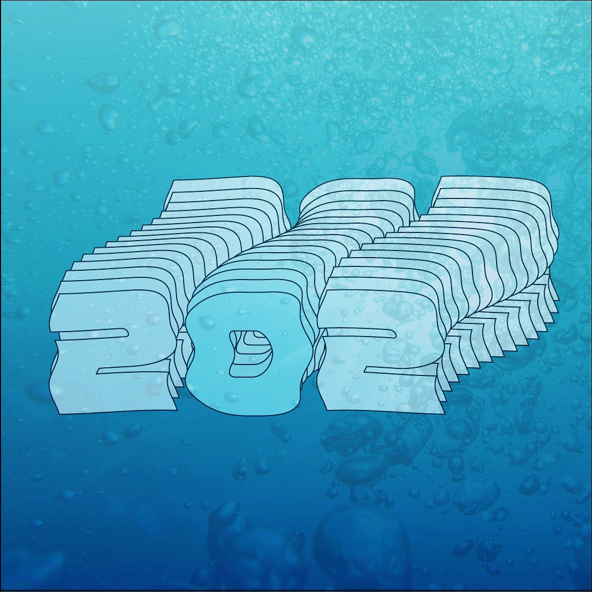

About

Name
Kubota Momoka ( Pinkey )
Career
-2019年9月 Life is Tech!株式会社のインターンシップで
Webデザイン講師になるための研修を受け、デザインや
HTML/CSSの基礎知識を学ぶ。
-2019年10月〜現在Webデザイナー講師として4人の中高
生の生徒を指導し、Webデザインの基礎的知識や楽しさ
を教えている。
Web Site
「DECORA FASHION Site」
 

Year
2019 Sep. - Oct. ( 2weeks )
Role
All me ( Coding・Design )
Production background and purpose
自身が大好きな原宿ファッションのデコラファッションが衰退している現状を知り、多くの人にもっとこのファッションを知っ
てもらいたいと思ったので制作しました。
Point
初めてオリジナルサイトを制作しました。このファッションにあったデザインを意識しました。自身で一からサイトを作ること
でHTMLやCSSの基礎を学ぶことが出来ました。また外国人の方にも知って頂きたいと思ったので、英語版も作成しました。この
経験を通して多くの情報を一つにまとめ、落とし込むことが好きなんだと分かりました。
POP
「飲食店のPOP」


Year
2019 Oct./Dec.( 1weeks )
Role
All me ( Design )
Production background and purpose
飲食店のアルバイト先で「スピードメニューのPOPがないから作って欲しい」と店長に頼まれ、店長からの要望に答えながら制作
しました。定番のメニュー表しかなかったので、パッと目に付くPOPをテーブルに置いておくことでスピーディーに注文して頂く
ことが可能となりました。その後も季節の限定メニューなども制作しました。
Point
写真を入れ、メニューを分かりやすく提示したり、色味もメニューによってこだわりました。POP作りをPhotoshopやIllustratorで
制作することでかっちりと整ったデザインだけど暖かみのあるPOPを制作することが出来ました。
Typography
「音楽を可視化する」


Year
2019 Jun./Nov.( 3hours )
Role
All me ( Design )
Production background and purpose
軽音サークルに所属しており、音楽が好きなので「音楽×アート」を融合させたら面白いのではないかと思い、制作しました。歌詞
や歌手の雰囲気が可視化して他者に伝わるようにデザインを工夫しました。
Point
一部の歌詞からの可視化ではなく、全体の曲を通して伝わるようにし、あえてデザインをあまり複雑なものにはせず、シンプルだけ
ど奥ゆかしさが残るデザインにしました。